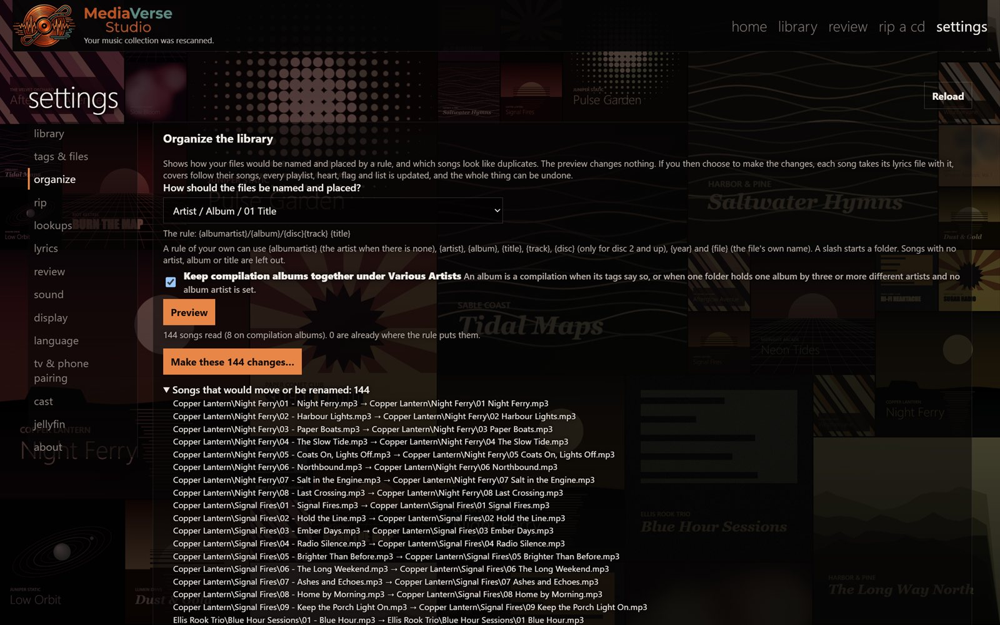
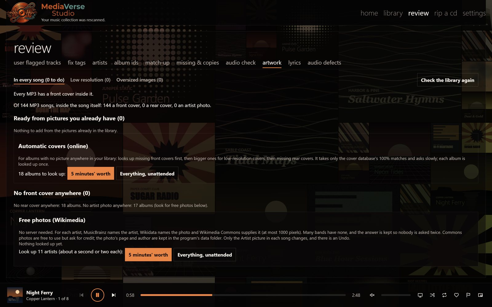

Windows PC
The studio at the center of it all.
The Windows program is the full MediaVerse Studio: it holds your library, rips your CDs, repairs what is wrong, plays everything and shares it with your phones, TVs and speakers. No server and no account needed.
Download for WindowsWhat it does
Public beta 0.9.1 · Windows 11, 64-bit · the installer is not code signed yet

Organize
Your collection, easy to find your way around
Works with a folder on this computer or on a network drive, with the calm, bold look of the Zune: big type, your covers everywhere.
- Artists, albums and playlists, one search box and an A to Z bar on every long list
- Artist pages with each album's cover beside its songs, in the columns you choose
- A Home page of new music, pinned albums, what you play most, and a "Feeling lucky?" jukebox
- Playlists you drag into order; smart playlists made of rules; import XSPF, JSPF and M3U, and export XSPF or M3U8
- Favorites and flags on any song, with a heart and a flag



Fix
The review pages: find problems, decide, apply
Nothing in your library is renamed or rewritten without you asking. Long jobs show their progress and can run five minutes at a time or unattended.
Tags
Fix tags finds the real release from the tracks you have and their lengths (MusicBrainz and Discogs, with name searches that also ask iTunes and Deezer). See each change, apply what you want, undo any batch.
Recognize by sound
Switch on AcoustID and it listens to songs with no real title, or checks that albums are what their tags say.
Covers
Find albums with no cover, a blurry one or an oversized one, and put a JPEG of sensible size inside every song. Back covers and free artist photos too.
Lyrics
From the song's own tags, a .lrc file beside it, or LRCLIB, many of them time-stamped so they follow the song.
The Lyric AI
Runs on your computer with models you add. It checks that words match the singing, times each line, and drafts words for songs nobody has transcribed, marked for you to check.
Sound faults
A scan finds clicks, pops, dropouts, stuck sound and silent songs, and gathers a "Needs re-ripping" list.
Flagged songs
Songs you flagged on a phone, a TV or here wait on one page with the tools to put them right.
Gaps and duplicates
Lists of missing tracks and second copies, and album IDs that tie an album to the exact release.


Rip
CD rips you can check
Each disc is read to a lossless copy first and compared with AccurateRip, the shared database of how other people's copies of the same disc came out. A one-time drive setup lines your drive up to the sample.
Two kinds of copy
An optional lossless FLAC archive, and MP3 for everyday listening (LAME V0, or 320 kbps).
Checked after writing
Each file is decoded again to make sure it plays back as it should, and the result is reported honestly: matched, no match or unavailable.
Disc details
Names from MusicBrainz, gnudb, the CUETools Database and Discogs, or typed in yourself, with covers and lyrics.
Play
Made for listening
- Now Playing with your covers as a living wall, and lyrics in time
- Gapless playback and crossfade
- Ten-band equalizer
- Volume levelling by album that never turns anything down
- Optional ReplayGain tags for other players, with undo (try one album first)
- Optional WASAPI exclusive output (little tried on audiophile gear)
- Mini player that can stay on top
- Media keys and taskbar buttons
- Auto-DJ keeps the music going
- Songs read into memory, so seeking does not wait on a network drive
- Right-click menus and keyboard shortcuts
- Twenty highlight colors, calmer motion, and American, British, Canadian, New Zealand or Australian spelling
Switching from MediaMonkey or MusicBee?
Both are good players, and both are ahead of us in places. Here is a plain comparison, from each project's own website on 23 November 2026. We may have missed things; if so, tell us on GitHub and we will correct it.
| MediaVerse Studio | MediaMonkey | MusicBee | |
|---|---|---|---|
| Price and source | Free, open source (GPL) | Free; Gold $39.95, or $99.95 for life | Free; not open source |
| Windows program | Yes | Yes | Yes |
| Android app | Yes, keeps your chosen music in step over Wi-Fi with your computer or Jellyfin server | Yes, Wi-Fi sync with the PC | Syncs music to devices; no app of its own listed |
| Samsung TV app | Yes, made for the remote (not in Samsung's store yet) | Shares to TVs over DLNA | Not listed |
| Casting | Google Cast, DLNA and the TV app | Google Cast and DLNA | Not listed on its site |
| Jellyfin server | Built in: shared playlists and flags, or the whole library | Not listed | Not listed |
| CD ripping, checked | AccurateRip, decoded again after writing, defect scan, re-rip list | Yes; AccurateRip is a Gold feature | Yes |
| Lyrics, time-stamped | Lookup, an editor, and an AI that times the lines to the singing | Looks up lyrics | Not listed |
| Gapless and crossfade | Yes (sample-exact in exclusive output; within about 30 ms otherwise) | Not listed | Gapless |
| Volume levelling | By whole album: quiet and older recordings are lifted toward a modern level, nothing is turned down, and it can be written into your files | Yes (automatic is Gold) | Yes |
| Equalizer | Ten bands | Ten bands | Ten or fifteen bands |
| Audiophile output (WASAPI, ASIO) | WASAPI exclusive, optional (FLAC, MP3, WAV; bit-perfect at full volume). ASIO: not yet | WASAPI | WASAPI and ASIO |
| Skins and themes | Your album art is the skin: colors and a wall of covers that follow what plays, with twenty highlight colors | Skins | Skins |
| Add-ons and plugins | No third-party add-ons yet. Lyrics, covers, Jellyfin and casting are built in | Add-ons, and some Winamp plugins | Plugins and a developer API |
| Podcasts and radio | Podcasts planned; radio later | Yes | Yes |
| Video | No | Yes | No |
Shaded rows are where they are ahead. Names belong to their owners; MediaVerse Studio is not affiliated with MediaMonkey or MusicBee.